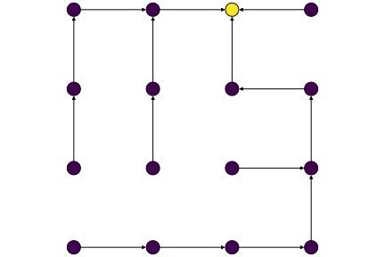
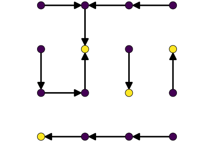

The random forests produced by this package come from graph theory, and are unrelated to the random forests found in machine learning. A tree is a graph without cycles, and a forest is a set of trees. We are interested in a specific way of generating random spanning forests in a graph, because of its deep ties to the graph Laplacian.
This is an example of a graph (with a loop):

This is an example of a spanning tree for the (same) graph:

Finally, this is an example of a spanning forest:

Importantly, all the forests we use are considered to be rooted: each tree in the forest is directed, and all edges point towards the root of the tree. In the forest above, the roots are the nodes 5 and 3.
When we talk about a "random spanning forest", we mean a forest $\phi$ sampled from the following distribution:
\[p(\phi) = \frac{1}{z} q^{R(\phi)} \prod_{(ij)\in \phi} w_{ij}\]
where:
- $ \phi $ is a forest, viewed as a set of edges,
- $ R(\phi) $ is the number of trees in $\phi$,
- $ w_{ij} $ is the weight associated with edge (ij) (which equals 1 if the graph is unweighted)
- $ q $ is a parameter that determines the average number of trees.
- $ z $ is an integration constant.
next(rf::KirchoffForest)
Return a vector of indices v, where v[i] = j means that node i points to node j in the forest. If v[i] = 0 i is a root.
random_forest(G::AbstractGraph,q)
Run Wilson's algorithm on G to generate a random forest with parameter "q". q determines the probability that the random walk is interrupted at a node. If q is a scalar, that probability equals q/(q+d[i]) at node i with degree d[i]. If q is a vector, it equals q[i]/(q[i]+d[i]).
Example
using Graphs G = grid([3,3]) random_forest(G,.4) q_varying = rand(nv(G)) rf = random_forest(G,q_varying) nroots(rf) next(rf) #who points to whom in the forest`
random_spanning_tree(g,[r])
Generate a (uniform) random spanning tree using Wilson's algorithm. A spanning tree of g is a connected subgraph of g that's cycle-free, i.e. a tree that includes only edges from g and connects every node. If you specify the root of the tree, the function produces a spanning tree that is picked uniformly among all trees rooted at r. If you do not specify a root, the function produces a random tree from g, picking uniformly among all spanning trees of g (over all possible roots).
NB: a graph must be connected in order to have a spanning tree. By default, the function checks that g is connected (in order to avoid an infinite loop). If you are positive g is connected, use force=true.
Arguments
- g: a graph
- optional: r, index of a node to serve as root
- force: if true, skip connectivity test
Output
If the root is specified, returns a tree, represented as a SimpleDiGraph. If it isn't, returns a named tuple with "tree": the tree and "root": the root.
Examples
julia> g = cycle_graph(4)
{4, 4} undirected simple Int64 graph
julia> random_spanning_tree(g).tree |> edges |> collect
3-element Array{Graphs.SimpleGraphs.SimpleEdge{Int64},1}:
Edge 2 => 3
Edge 3 => 4
Edge 4 => 1
smooth(g :: AbstractGraph{T},q,Y )
Smooth signal over graph. Given a vector $\mathbf{y}$ of size nv(g), compute $q(q\mathbf{I}+\mathbf{L})^{-1}\mathbf{y}$, where $\mathbf{L}$ is the graph Laplacian and q > 0 is a regularisation coefficient (the smaller q, the stronger the smoothing).
If Y is a matrix then this function computes $q(q\mathbf{I}+\mathbf{L})^{-1}\mathbf{Y}$. The linear system is solved using a direct method.
Example
g = grid([10])
t = LinRange(0,1,10)
y = sin.(6*pi*t)
smooth(g,.1,y)
smooth(g,10.1,y)
SimpleDiGraph(rf :: KirchoffForest)
Convert a KirchoffForest rf to a SimpleDiGraph.
Example
g = grid([3,3])
rf = random_forest(g,.4)
f = SimpleDiGraph(rf)
connected_components(f)
*(p::Partition,Y :: Matrix)
Treating the graph partition as a linear operator, compute the average of Y over the partition.
Example
g = grid([5])
rf = random_forest(g,.5)
p = Partition(rf)
p*collect(1:nv(g))
*(rf::KirchoffForest,Y :: Matrix)
Treating the random forest as a linear operator, propagate the value of y at the root to the rest of the tree.
Example
g = grid([5])
rf = random_forest(g,.5)
rf*collect(1:nv(g))